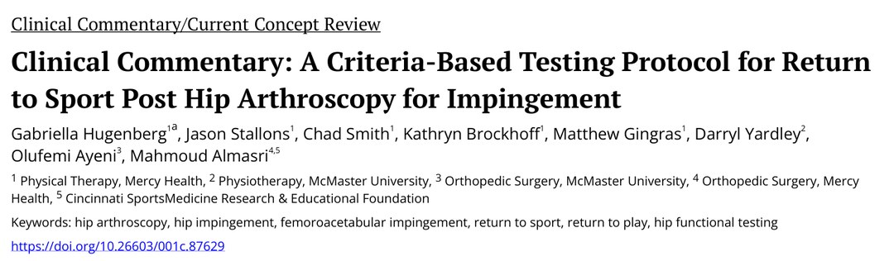
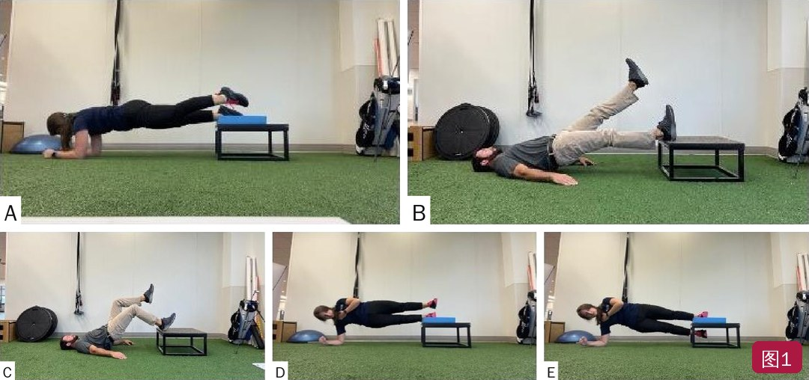
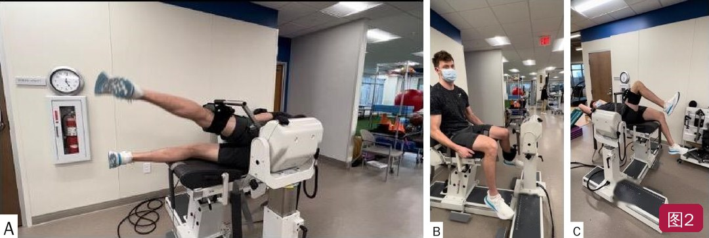
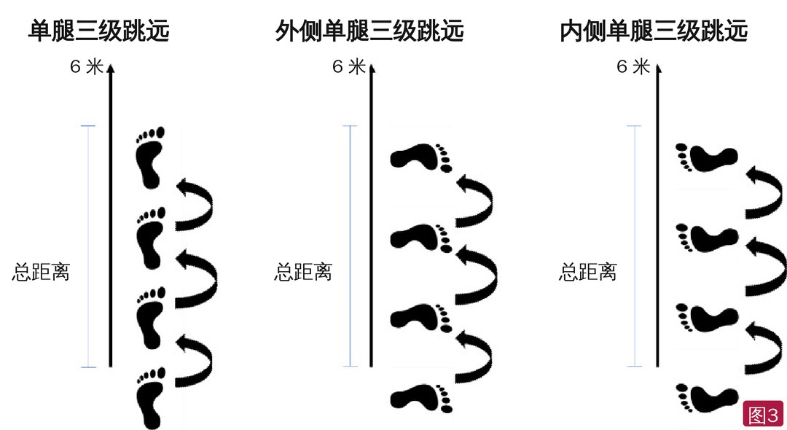

🔖原文首页（IJSPT 2023 年第 18 卷第 5 期）
📚 文献卡片
▪ 英文原题：Clinical Commentary: A Criteria-Based Testing Protocol for Return to Sport Post Hip Arthroscopy for Impingement（髋撞击症关节镜术后基于标准的重返运动测试方案）
▪ 作者：Gabriella Hugenberg · Jason Stallons · Chad Smith · Kathryn Brockhoff · Matthew Gingras · Darryl Yardley · Olufemi Ayeni · Mahmoud Almasri
▪ 机构：Mercy Health 物理治疗与骨科；麦克马斯特大学物理治疗与骨科；辛辛那提运动医学研究与教育基金会
▪ 期刊：International Journal of Sports Physical Therapy（IJSPT）
▪ 年卷期：2023;18(5):1218-1229
▪ PMCID：PMC10547071
▪ 文章类型：临床评论 / 当前概念综述
▪ 证据级别：5 级
▪ 关键词：hip arthroscopy · hip impingement · femoroacetabular impingement · return to sport · return to play · hip functional testing
股骨髋臼撞击症（FAI）是青少年和成人髋痛的常见原因。一项荟萃分析显示，非关节炎性髋痛的年轻运动员中 FAI 占 61.3%。手术和物理治疗都有证据支持，孰优孰劣仍有争议（Saueressig 等重新分析后未发现两者有统计学差异），但保守治疗无效时，很多人会选择关节镜手术。
Ishoi 等发现，髋关节镜术后 84%～87% 的运动员能重返运动，但只有 57% 回到伤前水平，只有 16.9% 自评表现达到最佳。文献中的重返时间从 3 到 12 个月不等，最常见是 7.4 个月。
• 2018 年一篇纳入 22 项研究的系统综述：54.5% 没有给出重返时间或测试方案；只有 3 项提供了可重复的测试方法
• Davey 等 2021 年系统综述：总体重返率 84.5%，平均 6.6 个月；最常用的标准是“时间”，没有统一的客观标准，约 1/4 的研究没报告任何标准
• Weber 等：12% 的运动员没能重返，其中 74.3% 是髋部原因，47.3% 主要因为持续疼痛
作者通过文献回顾，提出一套从康复早期一直用到重返运动的、基于标准的客观测试方案，包含五类标准：活动度、力量、功能测试、自评功能与心理准备、时间。
表1 髋撞击症关节镜术后基于标准的重返运动测试方案汇总
| 标准类别 | 测试项目 | 通过标准 |
|---|---|---|
| 1. 活动度 | 髋屈、伸、外展、内收、外旋、内旋 | 各方向与对侧相差 ≤5°，且无痛 |
| 2. 力量 | 手持测力计（HHD） | 所有运动平面肢体对称指数（LSI）≥90% |
| Bunkie 测试 | 后稳定线、侧稳定线、后力量线、前力量线各 40 秒；内侧稳定线 20～30 秒 | |
| 单腿桥测试 | 保持腰盆中立、骨盆不旋转、伸髋达 0°、臀肌激活良好，且 LSI ≥90% | |
| 等速测试：髋外展/内收、屈/伸、内/外旋 | 峰力矩 LSI ≥90%；测试速度 60°/秒和 120°/秒 | |
| 3. 功能测试 | 下台阶测试 | 3 次试验中至少 2 次，5 项标准中 4 项为阴性（无偏差） |
| Y 平衡测试 | 对称性 >94%，且两侧伸够距离差 <4 cm | |
| 单腿跳远测试：三级跳、内侧三级跳、外侧三级跳 | LSI ≥90% | |
| 4. 自评功能与心理准备 | iHOT-12、HOS 运动分量表、Hip-RSI | 全部 ≥90% 能力 |
| 5. 时间 | — | 术后至少 5～6 个月，且通过以上全部标准 |
未通过的项目每 7～14 天复测一次，直到通过；等速测试每 6 周复测一次，直到达到通过分数。
一句话概括：别只看时间——活动度、力量、功能、心理四关都过，再加至少 5～6 个月，才放行回赛场。
• 目前还没有 FAI 术后预期髋活动度的公开数据
• FAI 本身会使屈曲、外展、伸展、外旋、内旋活动度明显不同
• 判断时要考虑对侧髋是否也有 FAI 形态或活动受限；必要时参考按年龄、性别、种族建立的正常值
通过标准 主动和被动活动度各方向与对侧相差 5° 以内，且无痛。
髋关节在矢状面、额状面、水平面都有运动。作者认为徒手肌力测试（MMT）不够：它是等长测试，而且主观。MMT 5/5 可以作为进入更高阶段的初步指标，但重返运动需要更客观的测试。
• HHD 是经过验证的客观力量测试方法
• 尽量用绑带固定在稳定的支撑上，避免因治疗师施力或关节位置变化带来误差
• 除了力量数值，也要看收缩质量和有无代偿动作
• 建议测试三个平面的全部六个方向
通过标准 肢体对称指数（LSI）>90%。
• 原本用于评估高水平运动员的腘绳肌表现：仰卧，测试腿放在 60 cm 高的箱上，屈膝 20°，尽可能多做，动作不规范时由治疗师叫停
• 作者建议分两种用法：① 康复早期作筛查，主观判断臀肌激活、腰盆中立、骨盆不旋转、伸髋全程是否达标（通过/不通过）；② 康复后期按 Freckleton 等的方法测后链耐力
• 屈膝 135°、足平放、对侧腿伸直保持中立时，臀大肌肌电最高、腘绳肌最低，臀中肌也中等激活
• 作者建议把测试姿势改为屈膝 135°，更偏重臀大肌——但这一改良尚未经过正式研究
通过标准 LSI >90%。
• 核心力量和耐力是髋关节镜术后康复的关键，但重返运动测试中还没有核心评估的金标准
• 作者推荐 Bunkie 测试：5 个动作，评估额状面和矢状面的核心力量与稳定；包含静态肌肉功能、肌肉长度、姿势排列和脊柱稳定；发现弱点时也可以直接当训练用（图1）
• 在健康人中信度良好，但在受伤人群、尤其髋病患者中的信效度还需研究
• Brumitt 的病例报告：一名单侧腰痛的女性长跑者，按 Bunkie 结果开训练处方后，等长保持时间延长、腰痛消失
通过标准 无痛等长保持：前力量线、后力量线、后稳定线、侧稳定线各 40 秒，内侧稳定线 20～30 秒（低于此可能存在肌力失衡；依据 Ronai 的常模）。

🔖图1：Bunkie 测试的 5 个动作——前力量线（A）、后力量线（B）、后稳定线（C）、侧稳定线（D）、内侧稳定线（E）（原图各分图间留白较多，已重新排版）
• 等速测力仪是客观测肌力的金标准：可比较两侧峰力矩，也可按体重标准化、计算主动肌/拮抗肌比值
• Meyer 等：FAI 患者髋屈/伸、外展/内收的等速测试信度良好到优秀
• Casartelli：FAI 患者最大自主收缩力量低于健康人——内收 28%、屈曲 26%、外旋 18%、外展 11%
• 推荐测试屈/伸、外展/内收、内/外旋三组；60°/秒做 3 次，120°/秒做 5 次（图2）
通过标准 每个方向峰力矩 LSI >90%。

🔖图2：等速测试——髋外展/内收（A）、髋内旋/外旋（B）、髋屈/伸（C）（已重新排版；测力仪底板上的英文商标已去除）
• 临床常用，评估躯干和下肢的基本动态动作模式；用于非关节炎性髋痛患者时信效度良好
• 通过者在 VAS 和 HOS 运动分量表上疼痛更轻、运动功能更好
• 按 McGovern 等的方法：一名评估者先给整体表现打分（平衡、足跟着地借力、上肢明显代偿、能否完成）
• 每次再按 5 项判定阳性/阴性：躯干（前倾、侧旋、侧屈、胸椎旋转）、骨盆（倾斜或旋转）、髋（内收或内旋）、膝（外翻或抖动）、下蹲深度（足跟无法触地）
通过标准 整体印象为通过，且 5 项中至少 4 项为阴性（无偏差）。
• 由星形偏移平衡测试（SEBT）简化而来，只保留信度最好的三个方向：前、后内、后外
• 评估动态姿势控制，能预测年轻运动人群的下肢损伤；后内、后外方向的伸够距离与伸髋、外展力量相关
• 推荐使用 YBT 专用器材以提高信效度
• 计分：每个方向取 3 次平均（cm），再除以腿长 × 100 换算成百分比
通过标准 对称性 >94%，且患侧与健侧伸够距离差 <4 cm。
• 单腿跳测试常用于踝、膝损伤后的重返判断，信度好，与下肢力量和功能表现相关
• ACL 康复中，通过包含单腿跳在内的成套测试，可使同侧移植物断裂风险降低 78%～84%；在髋部的证据还较少
• 推荐 3 项：单腿三级跳远、内侧三级跳远、外侧三级跳远（图3）
• Kollock 等：三级跳做功是髋外展、内收、屈肌最大力量和发力速率的强到很强的指标
• Kivlan 等：内侧、外侧三级跳信度高（ICC 分别为 0.96、0.93），髋病舞者内侧跳两侧差异显著
• 做法：先健侧，连续跳 3 次，最后一跳落地保持 5 秒；量每次距离（cm），取 3 次中最好的一次；两侧比较
• 每次还要定性打分“好/一般/差”，“差”判为失败，不计入
通过标准 跳远距离 LSI >90%，且三项跳的定性评级均为“好”。

🔖图3：单腿跳测试示意——单腿三级跳远、外侧单腿三级跳远、内侧单腿三级跳远（原图英文标注已改为中文）
• 很多髋功能问卷偏重低水平活动，对年轻运动人群不够敏感
• iHOT-12（国际髋结局工具）：在有各种髋病的年轻人中有效、可靠、反应度好；适合活跃人群的日常活动评估，但评估高水平运动有局限——建议用于康复早期
• HOS（髋结局评分）：分日常活动和运动两个分量表，对盂唇撕裂和髋关节镜术后人群有效——康复后期改用 HOS 运动分量表
通过标准 问卷得分 >90% 能力（即 <10% 功能障碍）。
• 害怕再伤和信心丧失会明显影响重返，与身体状态无关；ACL 研究较多，FAI 术后数据很少
• Hip-RSI（髋伤后重返运动量表）由 ACL-RSI 改编，用法简单，在髋关节镜术后人群中信效度良好，应与功能测试和其他结局量表一起使用
通过标准 得分 >90%（即 <10% 功能障碍），分数越高心理准备越好。
目前没有证据说明什么时候开始重返运动测试最合适。作者建议标准 1～4 在整个康复过程中持续评估，结合生物愈合时间和康复进度，按以下时间开始各项测试：
各项测试最早开始时间（据原文正文整理）
| 术后时间 | 测试项目 | 说明 |
|---|---|---|
| ≥8 周 | 单腿桥测试、下台阶测试 | 这些动作已加入训练后再测 |
| ≥12 周 | Y 平衡测试、Bunkie 测试 | 这些动作已加入训练后再测 |
| 12 周 | 活动度 | 应达到全部活动度标准 |
| 全程～16 周 | HHD 力量 | 可全程测；16 周时达到 LSI 90%，之后再做单腿跳测试 |
| ≥16～20 周 | 单腿跳测试 | — |
| ≥20～24 周 | 等速测试 | 其他各项都已达标后再做，确保活动度、力量和组织愈合允许 |
| ≥5～6 个月 | 放行重返运动 | 且通过以上全部标准（5～6 个月是文献报告的平均重返时间） |
• 证据级别低：5 级临床评论，作者通过文献回顾提出，尚未验证；作者表示下一步要在完整康复方案中验证这套测试
• 亮点：把活动度、力量、功能、心理和时间整合成一套，每项都有明确的通过标准和最早开始时间，可直接用于临床
• 部分测试在髋病人群中证据不足：Bunkie 测试只在健康人中验证过；单腿桥屈膝 135° 的改良未经研究；单腿跳测试在髋康复中的效度证据较少
• 对设备有要求：等速测力仪、YBT 器材不是每家机构都有，基层应用可能受限
• 前后不一致：下台阶测试，表 1 写“3 次中至少 2 次”通过，正文写“3 次中至少 1 次”；HHD、单腿桥、等速、单腿跳的通过标准，表 1 写“≥90%”，正文写“>90%”
• LSI 的局限：以健侧为参照，若健侧也有 FAI 形态或术后整体去适应，LSI 可能高估恢复程度（作者在活动度部分也提醒要考虑对侧髋）
① 活动度：12 周时各方向与对侧相差 ≤5°，无痛
② 力量：HHD 六方向 LSI ≥90%（约 16 周）；单腿桥、Bunkie 达标；20～24 周后等速峰力矩 LSI ≥90%
③ 功能：下台阶 4/5 项无偏差；Y 平衡对称性 >94%、差值 <4 cm；三项单腿跳 LSI ≥90% 且质量“好”
④ 心理与自评：iHOT-12（早期）→ HOS 运动分量表（后期），Hip-RSI，全部 ≥90%
⑤ 时间：术后至少 5～6 个月，且以上全部通过
⑥ 复测：未通过的项目每 7～14 天复测，等速每 6 周复测
欢迎关注悦美力公众号，获取更多物理治疗的专业知识！
📄参考文献：
Hugenberg G, Stallons J, Smith C, Brockhoff K, Gingras M, Yardley D, Ayeni O, Almasri M. Clinical Commentary: A Criteria-Based Testing Protocol for Return to Sport Post Hip Arthroscopy for Impingement. Int J Sports Phys Ther. 2023;18(5):1218-1229. PMCID: PMC10547071.
文中图片均来自原文：图 1、图 2 分图已重新排版，图 2 测力仪英文商标已去除，图 3 英文标注已改为中文；表 1 已译为中文，仅用于学术交流。